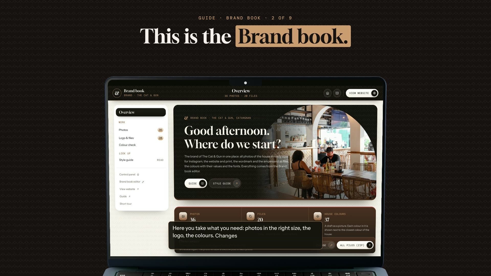

Academy · Room 05 · The brand · E
Brand book editor
Colours, fonts, photos, lines and the logo with its elements. What you publish here shows up in the Brand book, the Sticker editor and Print & feed.
Chapter 1 of 12 · Your brand.
In this video
What the video shows
Every chapter with the sentence from the video. A click on the time plays the video from there.
- 01Your brand.
- 02This is the Brand book editor.
- 03What is in it.
- 04The colours.
- 05Change a colour.
- 06More options.
- 07Which font for what.
- 08The photos.
- 09The lines.
- 10Every part in its own colour.
- 11Earlier versions.
- 12Save and publish.
Up next
Next guide: Brand book
The guides follow the order of the rooms.

F0:50
Brand book
Photos in the right size, the logo as SVG and PNG, the colours and fonts, a colour check for a design made elsewhere, and the style guide as PDF.
9 chaptersWatch the guide →

Room 05
Back to The brand
The room with this guide, the animation that shows how it works, the recommendation for use and the learnings.
The brandEnter the room →